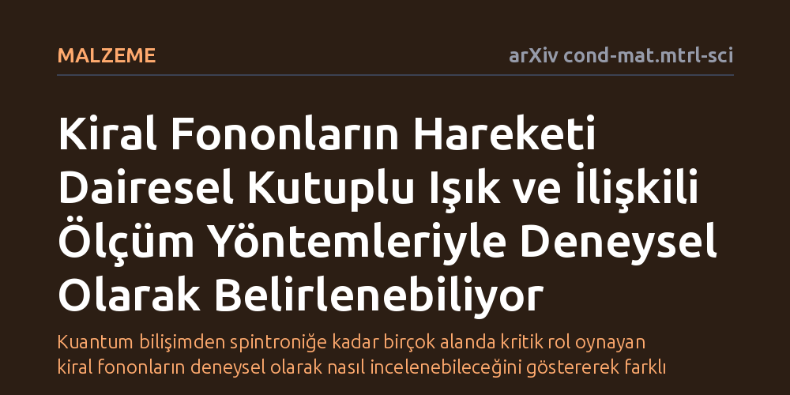

MALZEME · arXiv cond-mat.mtrl-sci · 2026-09-12
Atomik titreşimlerin açısal momentum taşıdığı kiral fononların kiral ve kiral olmayan malzemelerde nasıl ölçüleceği incelendi. Mevcut deneysel yöntemlerin avantajları ve sınırları karşılaştırılarak araştırmacılara sistematik bir ölçüm rehberi sunuldu.
Kuantum bilişimden spintroniğe kadar birçok alanda kritik rol oynayan kiral fononların deneysel olarak nasıl incelenebileceğini göstererek farklı disiplinler arasındaki yöntemsel kopukluğu gideriyor.

Katı maddelerin iç yapısında atomlar durağan değildir; belirli frekanslarda sürekli titreşir. Klasik fizik anlayışında bu titreşimlerin genellikle düz çizgiler halinde ileri geri gittiği varsayılırdı. Ancak kiral fononlar, atomların düz bir hat boyunca değil, dairesel veya eliptik yörüngeler çizerek döndüğünü gösteriyor. Bu dairesel hareket, titreşime net bir açısal momentum kazandırır ve maddenin yerel simetri özelliklerini kökten etkiler.
Kiral fononların taşıdığı bu dönme özelliği, onları manyetik ve elektronik süreçlerle doğrudan etkileşime sokar. Malzemenin kristal örgüsü ile elektronların manyetik yönelimleri (spinleri) arasındaki iki yönlü bağı etkinleştiren bu olgu; spintronik devreler, yöne duyarlı kimyasal reaksiyonlar, kuantum bilgi işleme ve biyolojik algılama gibi birçok alanda yeni işlevlerin kapısını aralıyor. Ancak bu potansiyelden yararlanabilmek için öncelikle bu titreşimlerin laboratuvar ortamında güvenilir şekilde tespit edilmesi gerekiyor.
Kiral fononlara yönelik ilgi hızla artsa da şimdiye kadar yapılan çalışmalar birbirinden büyük ölçüde bağımsız ve kopuk kulvarlarda ilerledi. Örneğin spintronik alanındaki araştırmacılar kendi manyetik malzeme sistemlerine odaklanırken, biyosensör veya ısıl iletim üzerine çalışanlar bambaşka platformlarda kendi yöntemlerini geliştirdi. Her araştırma grubu kendi deneysel araçlarını kullandı; ancak bu tekniklerin altında yatan fiziksel ilkeler ve ortak zorluklar bütüncül bir yaklaşımla ele alınmadı.
Yazarlar bu derleme çalışmasında, literatürdeki dağınıklığı toparlamak amacıyla kiral ve kiral olmayan malzemelerde kiral fononları ölçmek için kullanılan güncel deneysel teknikleri mercek altına alıyor. Yeni bir deney düzeneği kurup tekil bir ölçüm yapmak yerine, mevcut spektroskopi ve optik yöntemlerin birbirleriyle olan ilişkisini, avantajlarını ve karşılaştıkları teknik kısıtları sistematik bir çerçevede kıyaslıyor.
Çalışmanın ortaya koyduğu en belirgin teknik bulgulardan biri, kiral fononların açısal momentuma sahip olmaları sebebiyle dairesel polarize ışığa seçici tepki vermesidir. Işığın elektrik alanının saat yönünde veya tersinde dönmesi, aynı yönde dönen fononlarla güçlü bir rezonans kurmasını sağlar. Bu sayede polarizasyon duyarlı Raman saçılması ve optik spektroskopi yöntemleri, kiral fononların varlığını doğrulamada ve yönelimlerini belirlemede birincil araçlar haline gelmektedir.
Öte yandan inceleme, mevcut yöntemlerin sınırlarını da netleştiriyor. Doğal olarak asimetrik kristal yapıya sahip kiral malzemelerde bu fononları saptamak daha dolaysızken, simetrik yapıdaki kiral olmayan malzemelerde kiral fonon davranışını gözlemlemek çok daha yüksek hassasiyet gerektiriyor. Zayıf sinyal seviyeleri, arka plan gürültüsü ve uzamsal çözünürlük sınırları mevcut tekniklerin ortak darboğazları olarak öne çıkıyor; yazarlar bu engelleri aşabilecek yeni nesil ölçüm yöntemlerinin ilkelerini tartışmaya açıyor.
Bu çalışmanın temel pratik değeri, kiral fonon alanında çalışan veya bu konuya adım atmak isteyen araştırmacılara sunduğu deneysel yol haritasıdır. Hangi malzeme türünde hangi ölçüm yaklaşımının daha güvenilir sonuç vereceğini haritalandıran bu perspektif, gereksiz deneme-yanılma süreçlerinin önüne geçmeyi hedefliyor.
Sonuç olarak çalışma, kiral fononların soyut bir kuramsal kavram olmaktan çıkıp deneysel olarak yönetilebilir ve ölçülebilir bir parametreye dönüşmesine katkı sağlıyor. Titreşim ile elektron spini arasındaki bağı deneysel olarak kontrol edebilmek, gelecekte daha az enerji harcayan kuantum aygıtlar ve yüksek hassasiyetli sensörler tasarlamanın zeminini hazırlıyor.